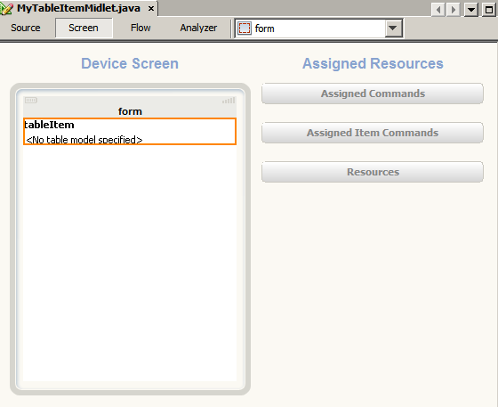
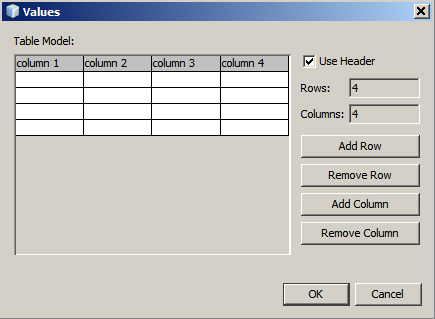
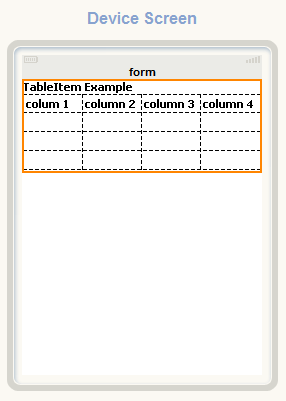
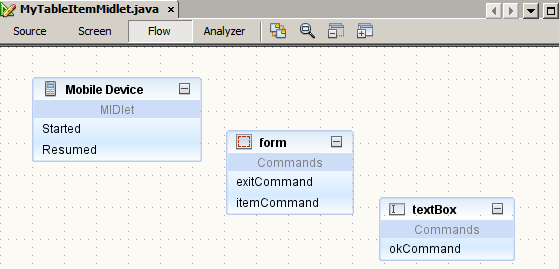

Создание проекта MyTableExample
- В меню File выберите команду New Project (Файл > Новый проект) (CTRL+SHIFT+N). В разделе "Categories" (Категории) выберите "Java ME". В разделе "Projects" (Проекты) выберите "Mobile Application" (Приложение Mobile) и нажмите кнопку "Next" (Далее).
- Введите
MyTableExampleв поле "Project Name" (Имя проекта). В поле "Project Location" (Местоположение проекта) укажите локальный каталог. Далее в тексте этот каталог будет называться каталогом $PROJECTHOME. - Снимите флажок с параметра "Create Hello MIDlet". Нажмите кнопку "Next" (Далее).
- Оставьте "Java Platform Micro Edition SDK 3.0" в качестве выбранной платформы эмулятора. Нажмите кнопку "Finish" (Готово).
Добавление пакетов и визуального мидлета к проекту "MyTableExample"
- Выберите проект
MyTableExampleв окне "Project" (Проекты), затем в меню File выберите комаду New File (Файл > Создать файл) (CTRL+N). В области "Categories" (Категории) выберите "Java". В разделе "File Types" (Типы файлов) выберите "Java Package". Нажмите кнопку "Next" (Далее). - Введите
tableitemexampleв поле "Package Name" (Имя пакета). Нажмите кнопку "Finish" (Готово). - Выберите пакет
tableitemexampleв окне "Project" (Проекты), затем в меню File выберите команду New File (Файл > Создать файл) (CTRL+N). В разделе "Categories" (Категории) выберите "MIDP". В разделе "File Types" (Типы файлов) выберите "Visual MIDlet". Нажмите кнопку "Next" (Далее). - Введите
MyTableItemMidletв поля "MIDlet Name" и "MIDP Class Name". Нажмите кнопку "Finish" (Готово).
Добавление компонентов к проекту MyTableItemMidlet
- Переключите визуальный мидлет на представление "Flow". Перетащите следующие компоненты "Screen" из окна "Palette" в окно "Flow Designer":
-
Form
-
TextBox
-
- Выберите компонент textBox и установите для свойства компонента "Title" в окне "Properties" (Свойства) значение Edit.
- Дважды щелкните компонент form, чтобы переключиться к представлению "Screen" (Экран).
- Перетащите компонент Table Item из раздела Items (Элементы) палитры компонентов в компонент form. Компонент Table Item, добавленный в Screen Designer, выглядит следующим образом:

- Выберите компонент tableItem, откройте окно "Properties" (Свойства) и введите
TableItem Exampleв качестве значения свойства "Label". - Правой кнопкой мыши щелкните компонент tableItem и выберите "Properties" (Свойства) во всплывающем меню.
- Щелкните стрелку () в свойстве "Table Model" и выберите команду<Создать SimpleTableModel> в раскрывающемся списке.
- Выберите "Close" (Закрыть).
Компонент simpleTableModel добавляется в раздел "Resources" (Ресурсы).
Изменение SimpleTableModel
- В представлении "Screen" (Экран) дважды щелкните компонент <No table model specified>> (Модель таблицы не определена), чтобы открыть диалоговое окно "Values" (Значения).
- В диалоговом окне "Values" (Значения)выберите параметр "Use Header" (Использовать заголовок).
- Нажмите кнопку "Add Row" (Добавить строку)и "Add Column" (Добавить столбец) четыре раза, чтобы увеличить количество строк и столбцов на 4.
- Переименуйте заголовки таблицы в column 1, column 2, column 3 и column 4.

- Для завершения нажмите кнопку "OК".

Добавление команд к компонентам Form и TextBox
- Откройте представление "Flow".
- Выберите элемент ExitCommand в разделе "Commands" (Команды) на палитре компонентов. Перетащите ее в компонент form. Повторите эту операцию для элемента ItemCommand.
- Выберите itemCommand в представлении "Screen" (Экран). Откройте окно "Properties" (Свойства) и измените значение свойства "Label" на Edit Cell.
- В представлении Flow (Последовательность действий) выберите элемент OkCommand в разделе "Commands" (Команды) на палитре компонентов и перетащите его в компонент textBox.

Соединение компонентов
Откройте представление "Flow", щелкните команду Started (Запущено) элемента "Mobile Device" (Мобильное устройство) и перетащите его в компонент form. Аналогичным образом соедините другие компоненты, как показано на следующем рисунке.

Вставка исходного кода
- В представлении "Flow" щелкните правой кнопкой мыши элемент itemCommand компонента form и выберите команду "Go to source" (Перейти к исходному тексту) во всплывающем меню.
- Вставьте следующий код перед методом switchDisplayable вместо комментария // write pre-action user code here:
if (textBox != null) { // Get position of the cursor in the table. int row = tableItem.getSelectedCellRow(); int column = tableItem.getSelectedCellColumn() ; // Get value from the table model Object value = simpleTableModel.getValue(column,row); // Set textBox string value if (value != null) textBox.setString(value.toString()); else textBox.setString(""); } - В представлении "Flow" щелкните правой кнопкой мыши элемент okCommand компонента textBox и выберите команду "Go to source" (Перейти к исходному тексту) во всплывающем меню.
- Втавьте следующий код перед методом switchDisplayable вместо комментария // write pre-action user code here:
int row = tableItem.getSelectedCellRow(); int column = tableItem.getSelectedCellColumn(); // Set new value to the table model simpleTableModel.setValue(column, row, textBox.getString()); // Repaint table model on the screen device simpleTableModel.fireTableModelChanged(); - Нажмите сочетание клавиш CTRL+S, чтобы сохранить внесенные изменения.
Запуск проекта
Нажмите клавишу F6, чтобы запустить основной проект. Можно также выбрать в меню Run команду Run Main Project (Запустить > Запустить основной проект).
 ) во всплывающем окне, чтобы просмотреть подробные сведения о компонентах TableItem и TableModel в обозревателе.
) во всплывающем окне, чтобы просмотреть подробные сведения о компонентах TableItem и TableModel в обозревателе.